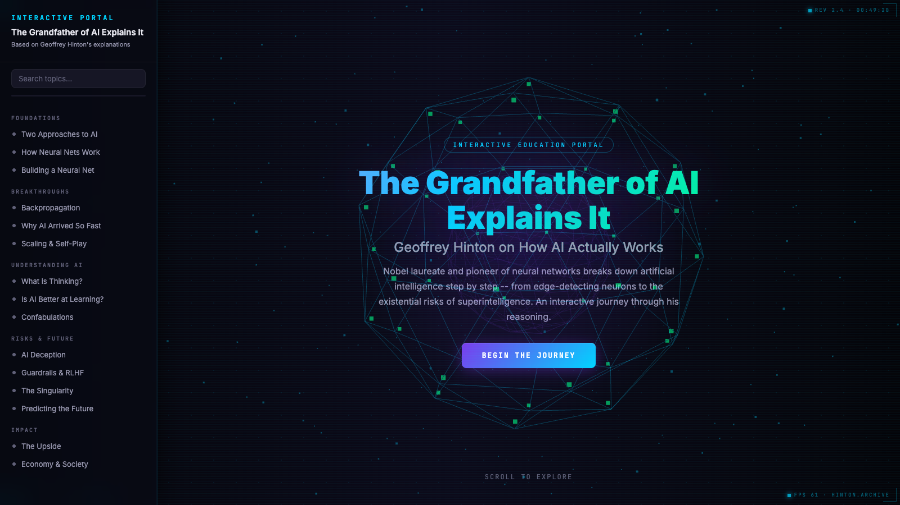

Hinton walked away from Google to warn the public about AI. He gives talks. He writes papers. But he no longer has time to sit anyone down for two hours and walk them — step by step — through what a neuron is, how backpropagation works, why this technology is suddenly faster than human reasoning, and what he is afraid of.
The portal does what he no longer has time to. It opens the hood. Shows you the parts. Lets you watch them move. Then explains, in his own words, why he is worried.
Most AI explainers are for engineers ("here's the math") or for marketing ("here's the magic"). The audience in between — people who run institutions, write articles, make policy — gets neither the math nor the magic. They get vibes.
The brief was to build for that middle audience: people who already know AI is important and who don't want a 90-second TikTok or a 600-page textbook.
Five thematic groups, fifteen sections total: Two Approaches to AI · How Neural Nets Work · Building a Neural Net · Backpropagation · Why AI Arrived So Fast · Scaling & Self-Play · What is Thinking? · Is AI Better at Learning? · Confabulations · AI Deception · Guardrails & RLHF · The Singularity · Predicting the Future · The Upside · Economy & Society.
Each section has an interactive visualisation (neural net activation, weight backprop animation, distillation animation) and a primary-source quote from Hinton himself.
Editorial — serif-dominant, Pismo / Notes na 6 tygodni feel. For cultural / NGO audience.
Hi-tech — neon cyan/purple, animated dots, brutalist tech vibe. For startup / scaleup audience.
Polska — full Polish translation with localised examples. For PL media and academia.
Same content, three skins. Pick whichever opens the door for your audience.
Single HTML per edition. Animations in Canvas where performance matters (backprop, distillation), SVG for the rest. No React. No bundler. Each edition is a freely forkable artefact — a teacher can save it, edit it, redistribute it as a PDF, embed it into a course.
Three visual treatments, identical content. Choose the one whose surface fits the audience you're trying to reach.
Explore the portal